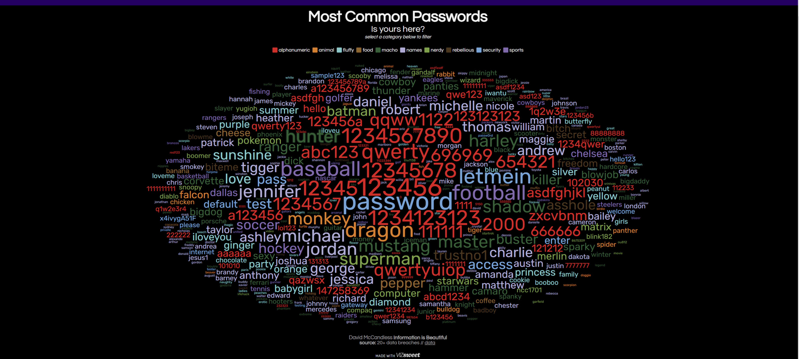
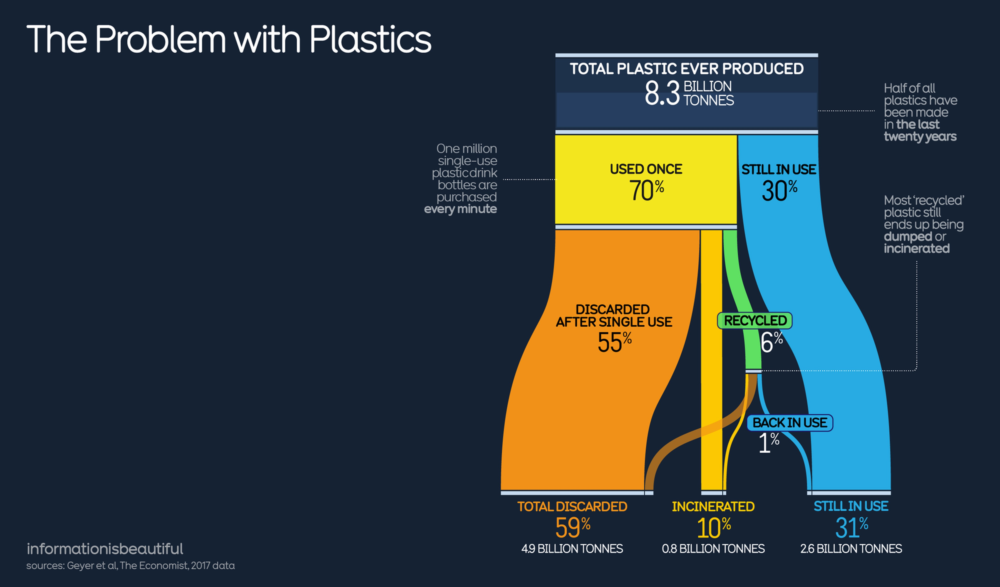

Visualization Dissection
by He JianChi 1009649
Part 1: Dissection

Idioms Problem
- Inappropriate use of colors and visuals: Confusing use of colors makes it impossible to see the point.
- Charts are disorganized: The passwords in the chart are not arranged in any obvious logical order.
- Information overload: The list contains a large number of passwords without filtering or searching capabilities.
- Lack of Context: No contextual information is provided about how these passwords are being used.
- Inconsistent design: The passwords in the list use different formats, reflecting inconsistencies in the data collection process.
Data Issues
- Data accuracy and completeness: Passwords do not show frequency of occurrence.
- Poor choice of data scale: The relative frequency or distribution of passwords is not provided.
- Missing data: No information about the source of the passwords is provided.
Part 1 Improvement
- The use of color should help to distinguish different categories or emphasize certain data points.
- Emphasis should be given by the size of the text or pattern.
- Sources of data should be annotated in detail.
- Don't pile on data to confuse the viewer.
Part 2: Data Issues

Idioms Issues
- Information overload: Charts contain a large number of data points without clear organization.
- Lack of Context: Charts do not provide enough contextual information.
- Inconsistent design: Numbers and percentages are not formatted consistently.
Data Issues
- Poor choice of data scale: The chart refers to “one million plastic beverage bottles purchased every minute” but provides no contextual information on the global population or beverage consumption, which makes it difficult to understand the significance of this figure. Figures such as “490 million tons of plastic are discarded” and “55% of plastic is used only once” do not provide a time frame, making it unclear whether these figures are cumulative or annual.
- Missing/inaccurate data: The chart refers to “830 million tons of plastic incinerated,” but it is not clear how this figure relates to other data, such as how it relates to total plastic production. The data for “260 million tons of plastics still in use” does not specify the type or use of these plastics, which limits the usefulness of the data.
Part 2 Improvement
- Provide contextual information: Provide more context for each data point, such as global trends in plastics production and consumption, and the impact of plastics on the environment.
- Clarify timeframe: Clarify the timeframe of each data point, whether annual or cumulative, so that users can better understand the scale of the data.
- Interactivity: Add interactive elements such as tooltips, click-to-expand details or filters to improve the user experience.
- Highlight key information: Use size, color, or position to highlight the most important data points for quick identification by users.